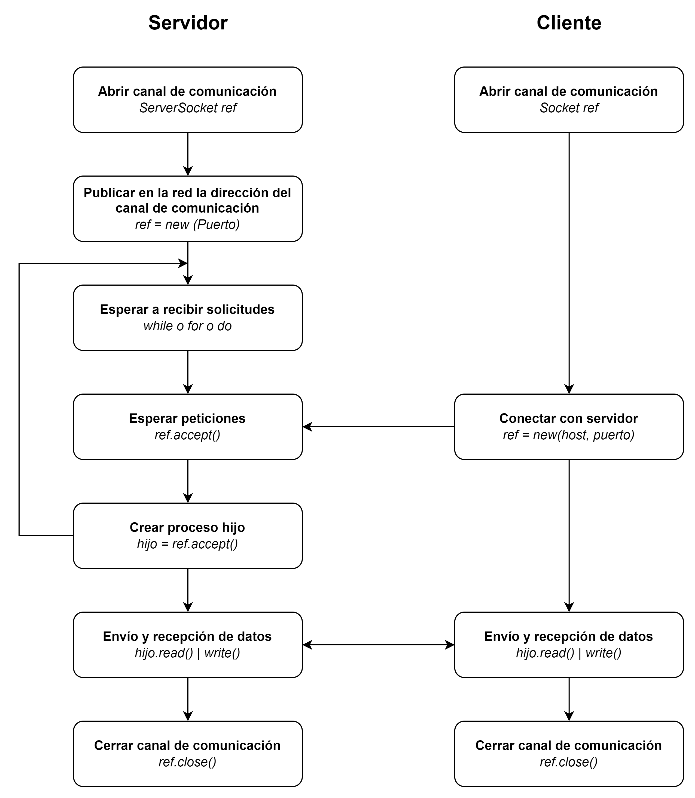

Redes y seguridad de computadoras
Programación de aplicaciones con sockets
Sockets en el lenguaje Java
De la manera más simple, la programación con sockets en el lenguaje Java se realiza apoyandose en dos clases:
- ServerSocket
- Socket
Clase ServerSocket
Se utiliza para implementar el extremo de la conexión que corresponde al servidor, donde se crea un conector en el puerto del servidor que escucha las peticiones de conexión de los clientes.
Constructor de la clase:
| Constructor | Características |
|---|---|
ServerSocket
|
Crea un socket de servidor sin ningún puerto asociado. |
ServerSocket(int port)
|
Crea un socket de servidor que se enlaza al puerto especificado. |
ServerSocket(int port, int backlog)
|
Crea un socket de servidor y lo enlaza con el número de puerto local especificado. El parámetro backlog permite especificar el número máximo de peticiones de conexión que se pueden mantener en cola. |
ServerSocket(int port, int backlog, InetAddress bindAddr)
|
Crea un socket de servidor en el puerto indicado, especificando un máximo de peticiones y conexiones entrantes y la ip del servidor. |
Métodos importantes:
| Método | Características |
|---|---|
Socket accept()
|
El método accept() escucha una solicitud de conexión de un cliente y la acepta cuando se recibe. Una vez que se ha establecido la conexión con el cliente, devuelve un objeto de tipo Socket, a través del cual se establecerá la comunicación con el cliente. Tras esto, el ServerSocket sigue disponible para realizar nuevos accept(). |
void close()
|
Se encarga de cerrar el ServerSocket. |
int getLocalPort()
|
Devuelve el puerto local al que está enlazado el ServerSocket. |
Clase Socket
Constructor de la clase:
| Constructor | Características |
|---|---|
Socket()
|
Crea un socket sin ningún puerto asociado. |
Socket(InetAddress address, int port)
|
Crea un socket y lo conecta al puerto y dirección ip especificados. |
Métodos importantes:
| Método | Características |
|---|---|
InputStream getInputStream()
|
Devuelve un InputStream que permite leer bytes desde el socket utilizando los mecanismos de streams. |
OutputStream getOutputStream()
|
Devuelve un OutputStream que permite escribir bytes sobre el socket utilizando los mecanismos de streams. |
void close()
|
Se encarga de cerrar el Socket. |
InetAddress getInetAddress()
|
Devuelve la dirección IP y puerto a la que el Socket está conectado. |
int getLocalPort()
|
Devuelve el puerto local al que esta enlazado el Socket. |
int getPort()
|
Devuelve el puerto remoto al que esta conectado el Socket. |
Diagrama del funcionamiento de una conexión de Socket:
